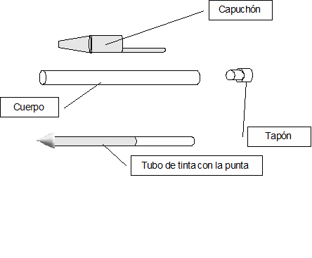

Proyecto técnico
Actividades tema “El proyecto técnico”
- ¿Qué es un Proyecto técnico?
- ¿Cuál es el objetivo del Proyecto técnico?
- Para organizar la información de la manera más comprensible posible, el proyecto técnico se divide en ...
- Enumera las partes de un proyecto técnico
- ¿Qué son la memoria y sus anexos en el proyecto técnico?
- ¿Cómo se elaboran los planos del proyecto técnico?
- El diseño siempre supone ...
- ¿Qué diferencia hay entre diseñar y diseño?
- ¿Qué es el pliego de condiciones?
- ¿Qué es el presupuesto del proyecto técnico?
- ¿Qué es analizar un objeto?
- ¿Qué utiliza la asignatura de Tecnología?
- Enumera las fases del proyecto técnico para Tecnología
- En la fase de identificación del problema y búsqueda de la mejor solución, el profesor expone ...
- ¿Qué es la memoria en el proyecto técnico de Tecnología?
- Enumera las partes de la memoria del proyecto técnico de Tecnología.
- El primer paso en la memoria será ...
- Explica el diseño del proyecto técnico de Tecnología.
- ¿En qué consiste la planificación en la fase de memoria?
- ¿Qué también se puede llevar a cabo en la planificación?
- Dibuja una hoja de proceso.
- ¿Qué se lleva a cabo en la fase de construcción?
- ¿Qué conseguimos con la fase de comprobación?
Actividad de análisis
Analizar un objeto consiste en observarlo para comprenderlo, una forma básica de analizar consiste en responder a las siguientes preguntas sobre el objeto: ¿cómo está hecho o fabricado?, ¿para qué sirve? y ¿cómo funciona?
Ejemplo del análisis de un estuche escolar
- ¿Cómo está hecho?
- ¿Para qué sirve?
- ¿Cómo funciona?:
– Está fabricado con tejido y una cremallera, ambas piezas están unida mediante una costura por sus extremos.
- Sirve para portar y guardar materiales y útiles de dibujo.
- La cremallera permite abrir y cerrar el conjunto en forma de bolsa , constituido por la tela y la propia cremallera, gracias
a la apertura del estuche se pueden sacar o meter los materiales y útiles de dibujo.
Analiza los siguientes objetos de la misma forma:
- una mochila escolar.
- un compás
- una pizarra
Actividad hoja de proceso
Dentro de la fase de planificación del Proyecto técnico tenemos la hoja de proceso que es una tabla que recoge y detalla cada una de las fases de construcción del objeto a construir a partir de sus piezas.
Ejemplo de hoja de proceso para la construcción de una cometa
| NOMBRE DEL PROYECTO | ||||
| Operaciones ordenadas | Materiales | Herramientas y máquinas | Instrumentos de medición y control | Tiempo de ejecución |
| Trazar sobre la superficie de cartón el patrón de la caja. | Cartón, lápiz y goma de borrar. | Regla, escuadra y cartabón. | Regla. | 15 minutos. |
| Recortar el contorno de la superficie del patrón. | Cartón trazado. | Tijeras. | 5 minutos. | |
| Pegar los lados de la caja por sus extremos. | Cola y cartón cortado. | 10 minutos. | ||
Elabora la hoja de proceso de los siguientes objetos_
- una cometa
- un estuche de fieltro
- un puzzle de cartón
Actividad de boceto
Ejemplo actividad boceto: haz el boceto (dibujo a mano alzada y sin medidas) de un bolígrafo bic e indica sus partes.

Elabora un boceto de los siguientes objetos e indicas sus partes
- una estuche
- una sacapuntas
- una caja de zapatos